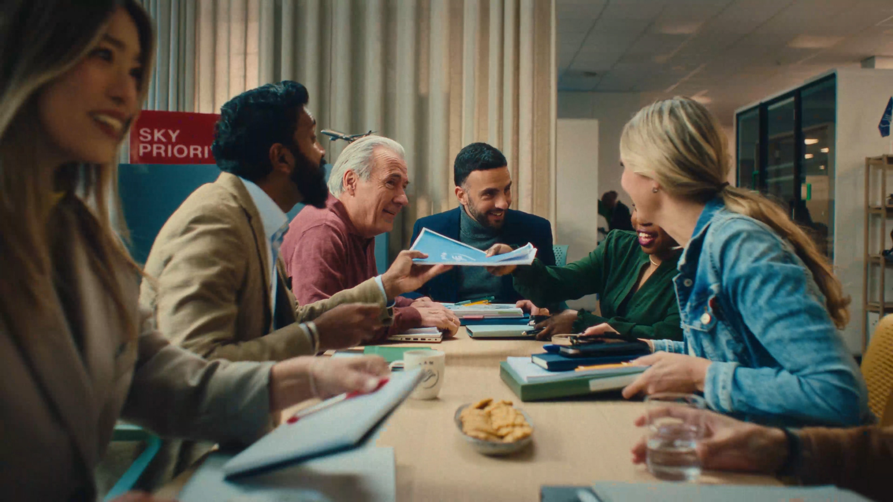
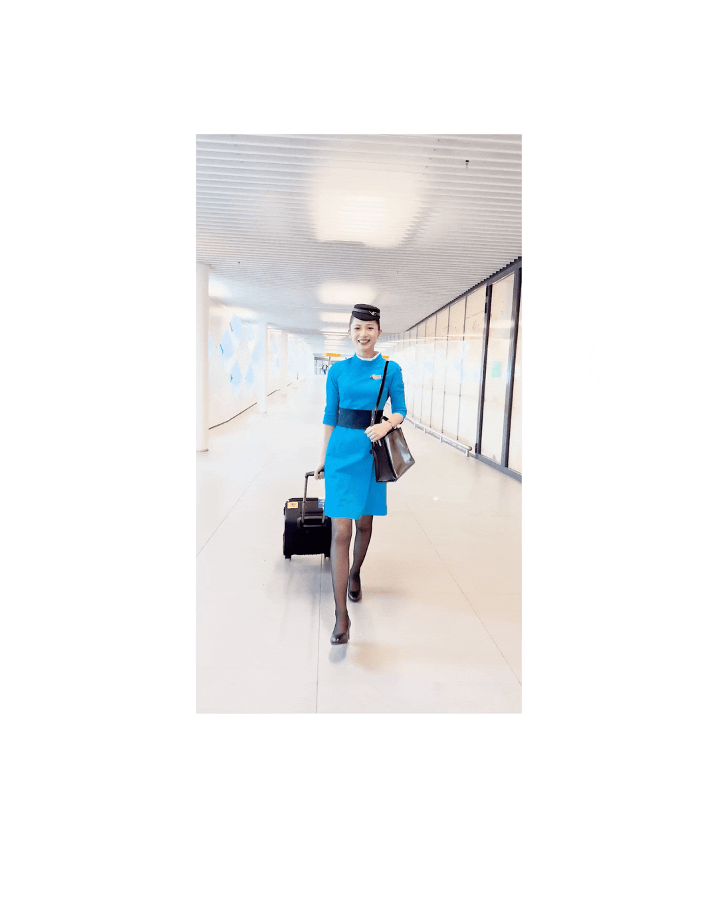
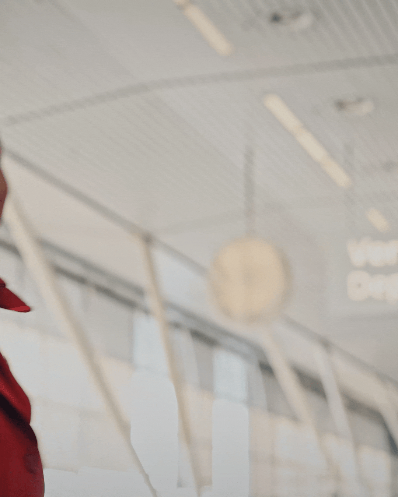

SkyTeam — The
Priority is You

Challenge
SkyTeam connects 19 airline members across the globe and quietly makes millions of journeys smoother every day. The kind of organisation almost nobody thinks about. For its 25th anniversary, the brief was to change that — giving the alliance a brand position that put the traveller at the centre and made the invisible hand of the alliance genuinely felt.
Approach
The strategic insight was that SkyTeam's greatest strength was also its least visible one. When it works, you don't notice it — you just find yourself through security faster, in the lounge, on the connecting flight, without quite knowing why it all went so smoothly. The brand manifesto "The Priority is You" reframed SkyTeam not as an infrastructure story but as a human one.



Outcome
A brand manifesto and refreshed positioning launched globally across in-flight entertainment, airport lounges, digital platforms and social media — giving SkyTeam a clear, human-centred voice for the next chapter of the alliance.